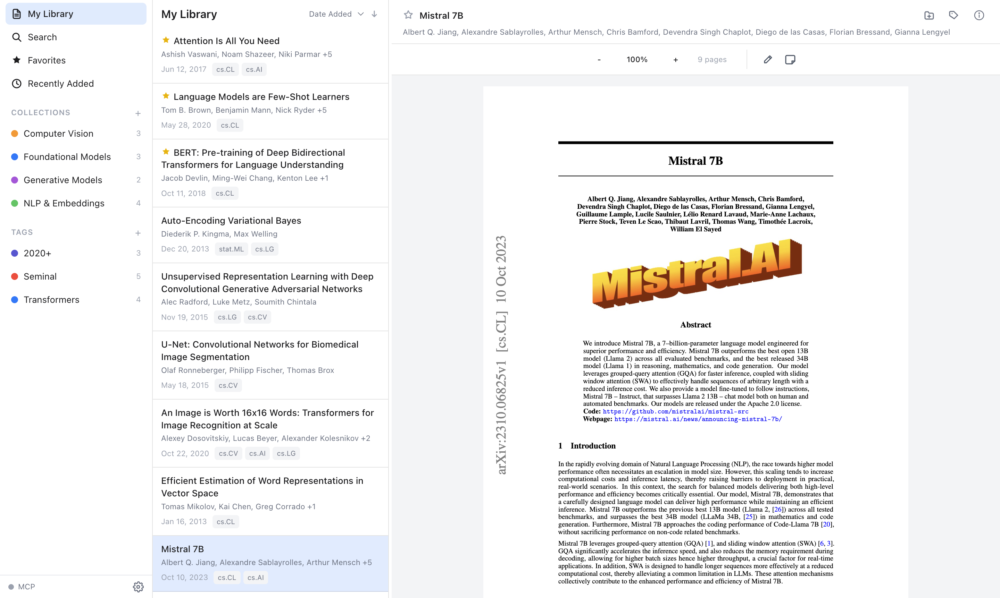
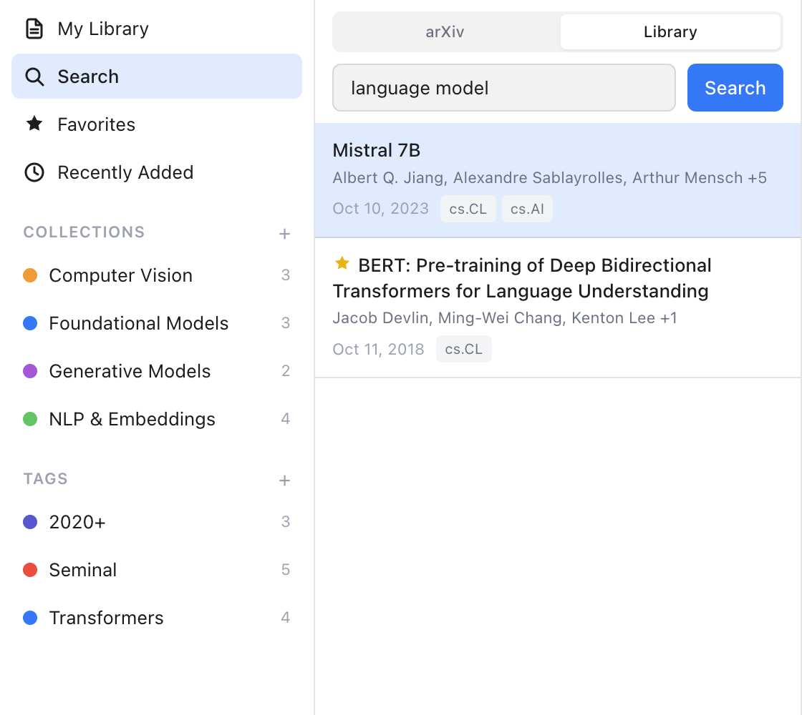
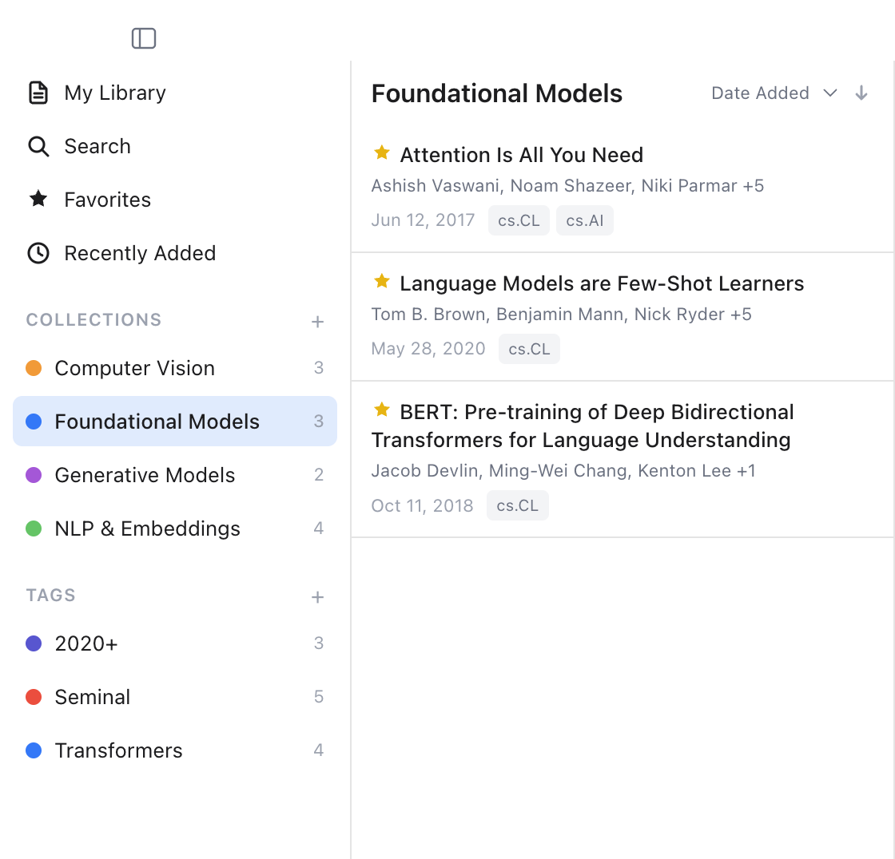
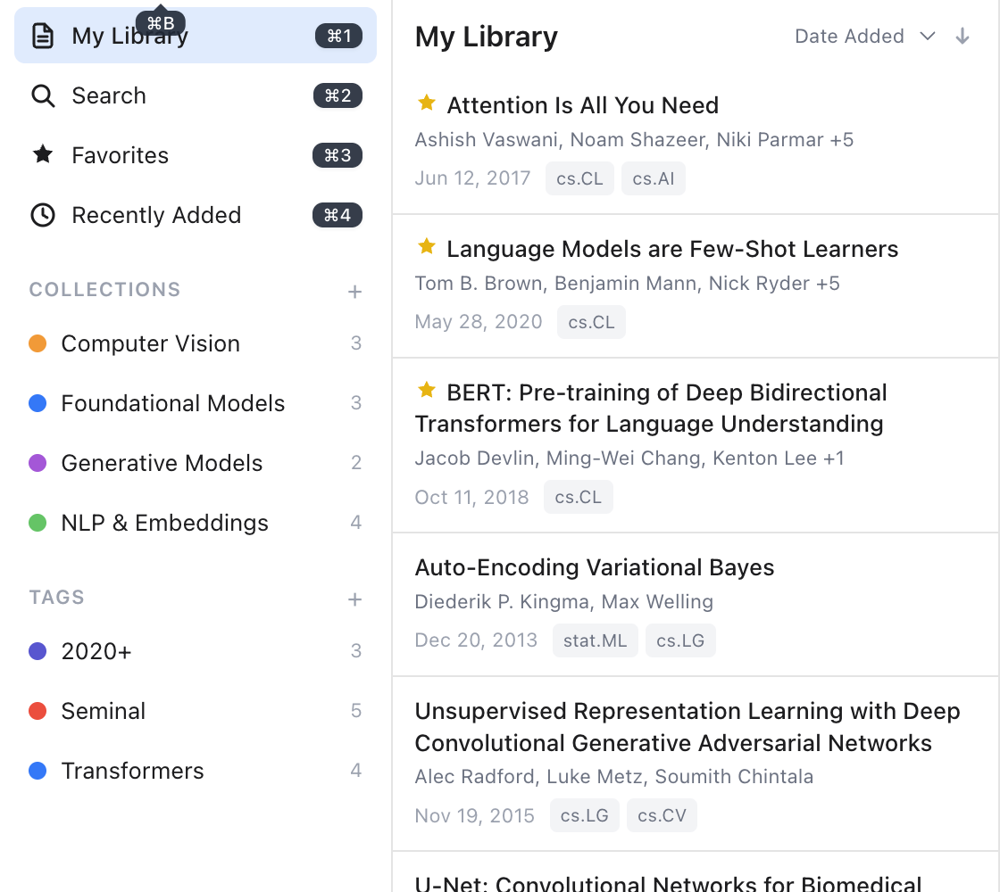
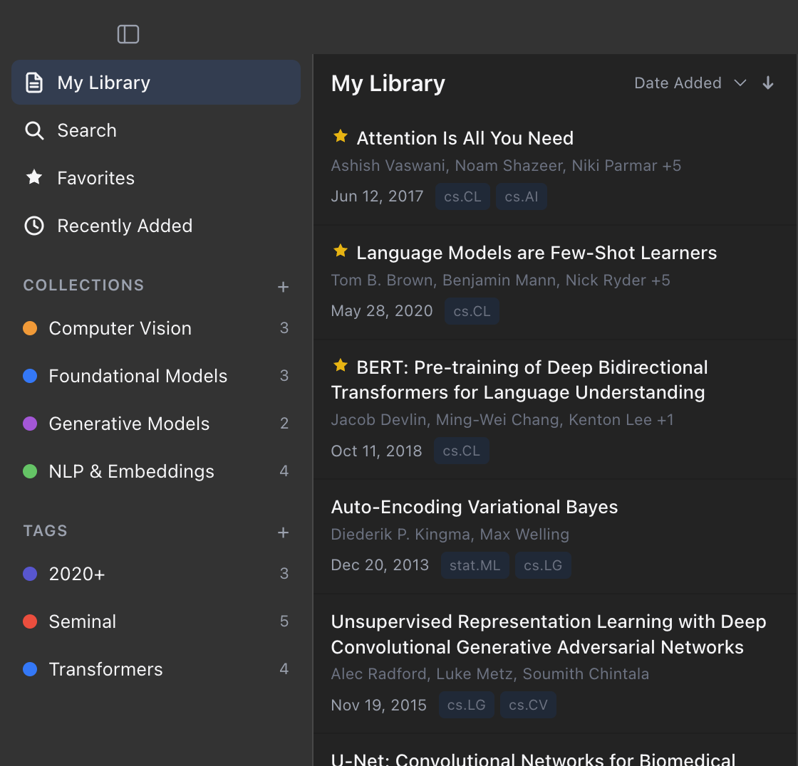

Runnpm run screenshots to generate screenshotsSearch arXiv, organize papers, and annotate PDFs — all from your desktop.

Runnpm run screenshots to generate screenshotsA native macOS app built for speed and simplicity.
Search arXiv directly from the app. Preview abstracts, save papers to your library with one click.
Highlight text and add notes to papers. Annotations are stored locally and stay with the paper.
Organize papers into color-coded collections and add tags for flexible categorization.
Search across all your saved papers by title, author, abstract, or full PDF text content.
Expose your library to AI assistants via Model Context Protocol. Chat with your papers using RAG.
Navigate your entire library with keyboard shortcuts. Hold ⌘ to see shortcuts live in the app — everything is a keystroke away.
Find papers by keyword, author, or arXiv ID. Preview abstracts and save to your library without leaving the app. Results appear in real time as you type.

search.pngGroup related papers into collections with custom colors. Build reading lists, project bibliographies, or topic clusters. A paper can belong to multiple collections.

collections.pngHold ⌘ to reveal every shortcut live in the sidebar. Navigate views, toggle favorites, and manage your library without reaching for the mouse.

shortcuts.pngPaperShelf follows your system appearance. Every view, dialog, and the PDF reader adapt seamlessly to light and dark mode.

dark-mode.png